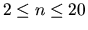
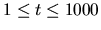

| Balancing Bank Accounts |
Once upon a time there was a large team coming home from the ACM World Finals. The fifteen travellers were confronted with a big problem:
In the previous weeks, there had been many money transactions between them: Sometimes
somebody paid the entrance fees of a theme park for the others, somebody else paid the hotel room,
another one the rental car, and so on.
So now the big calculation started. Some people had paid more than others, thus the individual bank accounts had to be balanced again. "Who has to pay whom how much?", that was the question.
As such a calculation is a lot of work, we need a program now that will solve this problem next year.
Each test case starts with a line containing two integers: the number of travellers n ( ) and the number of transactions t ( ). On the next n lines the names of the travellers are given, one per line. The names only consist of alphabetic characters and contain no whitespace. On the following t lines, the transactions are given in the format name1 name2 amount where name1 is the person who gave amount dollars to name2 . The amount will always be a non-negative integer less than 10000.
Input will be terminated by two values of 0 for n and t.
Then, on the following lines, print a list of transactions that reverses the transactions given in the input, i.e. balances the accounts again. Use the same format as in the input. Print a blank line after each test case, even after the last one.
Additional restrictions:
If there is more than one solution satisfying these restrictions, anyone is fine.
2 1 Donald Dagobert Donald Dagobert 15 4 4 John Mary Cindy Arnold John Mary 100 John Cindy 200 Cindy Mary 40 Cindy Arnold 150 0 0
Case #1 Dagobert Donald 15 Case #2 Mary John 140 Cindy John 10 Arnold John 150